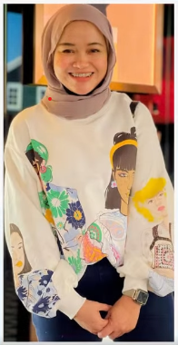

Meet the Owner

Siti Hajar Mohd Razali
Suka Dessert is owned by Siti Hajar Mohd Razali, also known as Auntie Ja. Her business gained significant attention through social media. Starting from her backyard with limited space, she served a small number of guests. Today, she owns a full-fledged dessert shop that can accommodate many customers and offer a wide selection of sweets displayed in a refrigerated dessert showcase.
Suka Dessert Detail
| Suka Dessert Detail | Description |
|---|---|
| Main Objective | To share with beloved customers the luxurious taste of desserts that have been made. |
| Target Market | People of various ages who are fans of chocolate, cakes, sweets, and candies. |
| Market Position | Suka Dessert strengthens their market position by promoting their products using influencers. Additionally, they introduce unique products that are not available from other brands. They also participate in food festivals across Malaysia, making their products accessible to customers outside the café's location. Their uniqueness lies in using high-quality chocolate such as Valrhona and Callebaut. |
| Business Competitors |
|
Strengths and Weaknesses of Suka Dessert's Online Presence
| Strengths |
|
| Weaknesses |
|